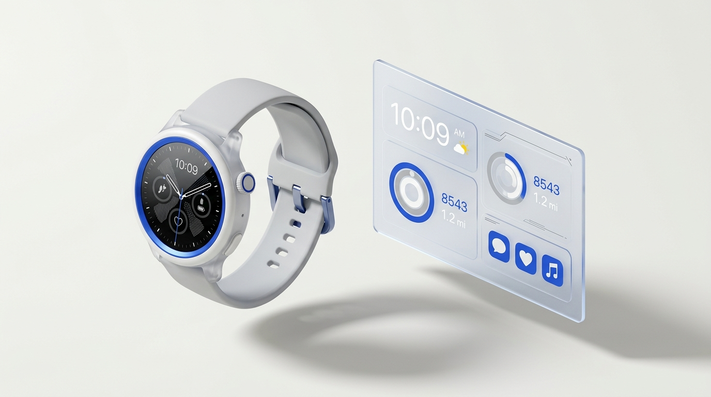
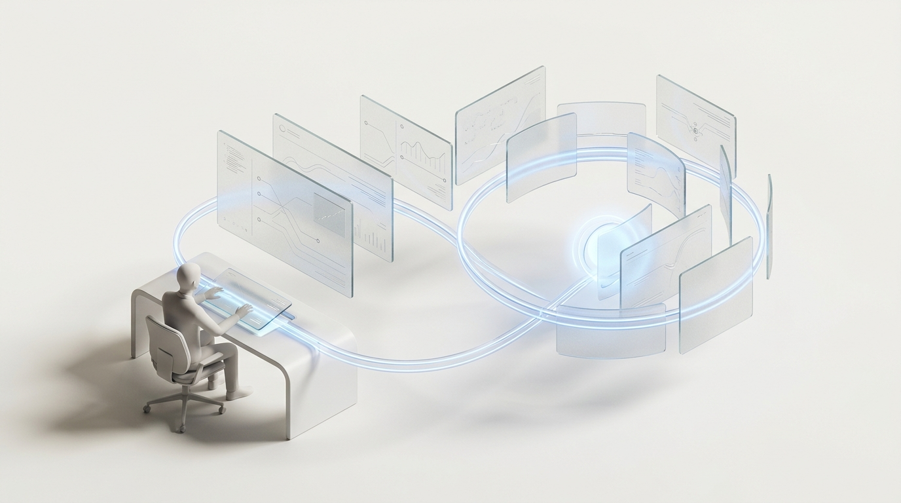
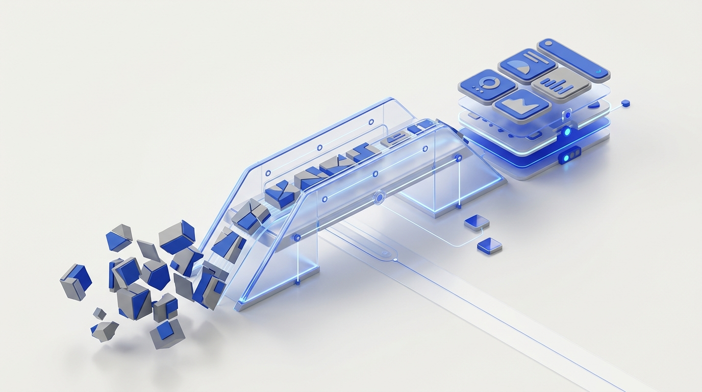
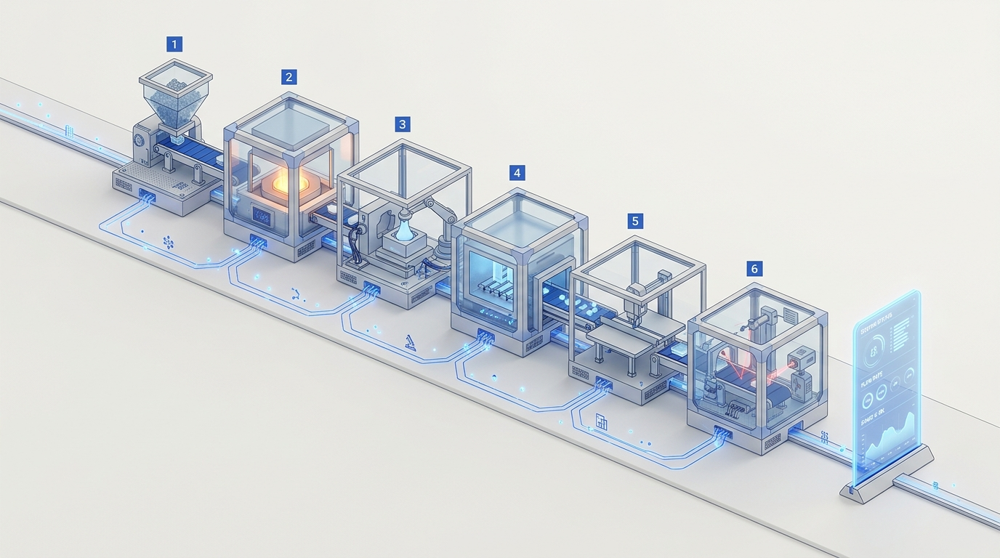
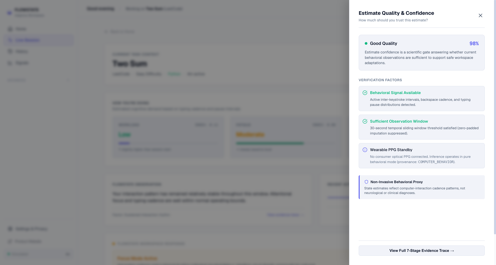

| # | Paper & Authors | Year | Methodology & Key Findings | Limitation & Relevance to Flowstate |
|---|---|---|---|---|
| 01 | Schmidt et al. ACM IMWUT / UbiComp |
2018 | WESAD dataset: Wrist PPG + Chest ECG under laboratory stress induction (15 subjects). | Limitation: Lab-only protocol; lacks real-time web UI integration. Relevance: Primary external benchmark dataset reference. |
| 02 | Fairclough, S. H. Int. J. Human-Comp. Stud. |
2009 | Theoretical biocybernetic closed-loop control architecture for physiological adaptation. | Limitation: Purely theoretical; omits sensor noise & UI thrashing. Relevance: Mathematical foundation for closed-loop hysteresis control. |
| 03 | Charles & Nixon Theor. Issues Ergon. Sci. |
2019 | Meta-survey of cardiac measures (HRV, PPG) for mental workload estimation. | Limitation: Universal static thresholds fail due to baseline diversity. Relevance: Justifies our 30s sliding-window baseline delta (ΔHR). |
| 04 | Kosch et al. ACM Computing Surveys |
2023 | Systematic analysis of consumer smartwatch biosensors in everyday desktop HCI tasks. | Limitation: Wrist motion artifacts and Bluetooth packet drops. Relevance: Motivates our dual-stream wearable + task telemetry fusion. |
| 05 | Sweller / Paas et al. Cognitive Science |
2003 | Cognitive Load Theory: Intrinsic, extraneous, and germane cognitive load dimensions. | Limitation: Pure behavioral telemetry cannot detect hidden internal strain. Relevance: Establishes target tri-state estimation (Workload, Fatigue, Engagement). |


